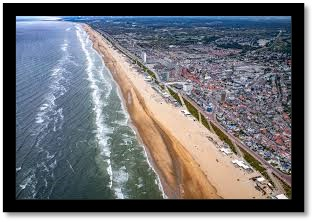

Ace Brandligt |
||
|---|---|---|
| Hallo ik ben Ace, ik ben geboren in Haarlem en ik woon in Zandvoort. Ik kom van het Wim Gertenbach College, een VMBO School Ik volg nu de opleiding software developer en wil uiteindelijk games ontwikkelen. | ||
| Ik woon in Zandvoort, dat ligt in Noord-Holland. Zandvoort staat vooral bekend om zijn stranden en nu ook het Formule 1 | Mijn woonplaats |
Ik woon in Zandvoort, dat ligt in Noord-Holland. Zandvoort staat vooral bekend om zijn stranden en nu ook het Formule 1


In mijn vrije tijd ga ik vaak gamen met vrienden en soms alleen. Verder luister ik ook graag naar muziek en kijk ik ook veel films en series. Ook ga ik soms naar de stad of gewoon naar buiten met m’n vrienden en ik vind basketbal ook leuk.

Ik ben goed in het spelen van games en ik ben goed in systemen instaleren
1.FF7 series 2.The Legend of Zelda breath of the wild 3. Mario galaxy 2 4. Mario kart series 5. FF16 6. The Legend of Zelda tears of the kingdom 7. Battlefield 1 8. Mario galaxy 9. FF15 10. Mario bros series